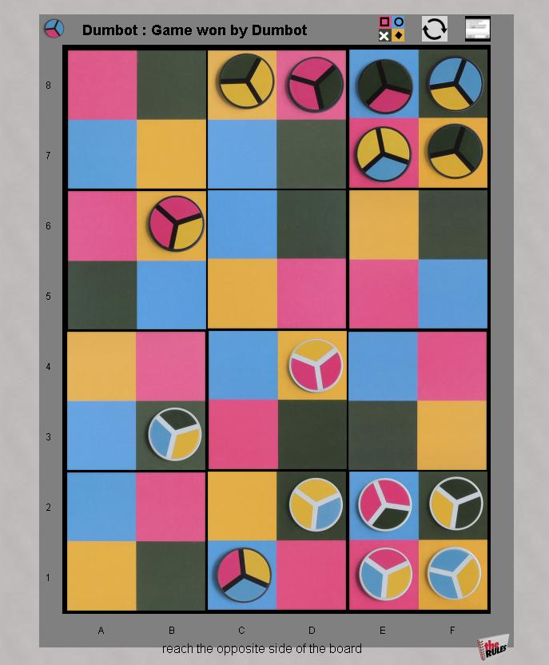

Iro
Iro is
a race across the board game, where movement is governed by the color
of squares on the board and on the pieces. The board is modular,
arranged from a random selection of tiles, each with a 2x2 grid of
colors; so the pattern of the colors is different every game. Each
piece is divided into thirds, with either 2 or 3 colors.
Naturally, for an abstract game, the board tiles and pieces form
complete sets of all permutations of the colors.
Movement is governed by matching colors on the moving piece with the color of squares on the board. Read the complete rules (it's a short list!)
Robots: Looking pretty strong now. I'm expecting an expert to be able to take them down though. And of
course, they won't be confused by the unusual lookahead of Iro.
|

|